GÖRSEL SANATLARDA YAPAY ZEKA
Görsel sanatlarda yapay zeka, bilgisayarların ve algoritmaların kullanıldığı bir alandır. Bu
alanda yapay zeka, görsel verileri analiz etmek, işlemek, yaratıcı süreçlerde yardımcı olmak
veya sanatsal içerik üretmek için kullanılır.
Yapay zeka, görsel sanatlar alanında şu şekillerde kullanılabilir:
1-Görüntü İşleme ve Düzenleme :
-
Görsel medya üzerindeki işlemler için yapay zeka oldukça
önemlidir. Fotoğraf düzenleme veya iyileştirme gibi süreçlerde, yapay zeka temelli araçlar
kullanılabilir. Bu süreçlerde, görüntü kalitesi artırılabilir, istenmeyen unsurlar çıkarılabilir,
renk ayarlamaları yapılabilir ve hatta nesneler veya efektler eklenmesi gibi işlemler otomatik
olarak gerçekleştirilebilir. Örneğin, Adobe'nin yapay zekâ destekli Photoshop Beta
uygulaması, fotoğraflarda yapılan seçimlerle üretken dolgu aracı sayesinde nesnelerin
eklenmesini sağlar. Bu durum, yapay zekânın görsel düzenleme süreçlerinde çeşitli işlemleri
başarıyla yürütebildiğini göstermektedir.
2- Stil Transferi :
-
Yapay zeka algoritmaları, bir sanat eserinin tarzını veya özelliklerini başka
bir görsel üzerine aktarmak için kullanılabilir. Bu süreç, bir eserin tarzını diğer bir görsel
üzerinde yeniden oluşturmayı ya da bir sanatçının karakteristik tarzını başka bir görselde
yansıtmayı amaçlar. Örneğin, stil transferi adı verilen bu yöntem, bir resmin stilini analiz eden
yapay zekânın, bu tarzı başka bir resme uygulayarak yeni ve yaratıcı görseller oluşturmasını
sağlar. Van Gogh'un tarzına benzeyen bir fotoğraf üretmek veya bir fotoğrafı Van Gogh tarzına
dönüştürmek gibi işlemler, yapay zekânın yetenekleri arasındadır. Örneğin, Deep Dream
uygulamasında, bir manzara fotoğrafı Van Gogh'un üslup özelliklerini içerecek şekilde yeniden
oluşturulabilir. Bu, yapay zekânın stil transferi ile görsel eserlerde farklı tarzları birleştirme ve
yeni estetikler ortaya koyma becerisini göstermektedir.
3- Görüntü Sentezleme:
-
Görüntü sentezleme, yapay zekânın derin öğrenme ve üretken
modeller aracılığıyla bir resimden yola çıkarak çeşitli görüntüleri yeniden oluşturma sürecini
ifade eder. Yapay zeka, bir veya daha fazla resimden başlayarak tamamen yeni nesneler,
manzaralar veya yüzler üretebilir. Örneğin, yapay zekâ destekli Photoshop Beta programında,
iki farklı sanatçıya ait resimler birleştirilerek üretken dolgu aracı kullanılarak yeni görseller
oluşturulabilir. Bu süreçte yapay zeka, kullanıcıya farklı öneriler sunarak beğeniye uygun
görseller üretir. Bu yetenek, yapay zekânın var olan görsel öğeleri birleştirerek tamamen yeni
ve orijinal görseller oluşturma kabiliyetini sergiler. Bu da sanatçıların yeni ve özgün içerikler
üretmelerine yardımcı olabilir. Siegle'nin (2023) belirttiği gibi, yapay zeka görüntü
manipülasyonu yapabilir ve gözden kaçırılmış durumlara öneriler sunabilir, bu da sanatçılara
yaratıcı süreçlerinde rehberlik edebilir.
4 – Yaratıcı ve Sanatsal İçerik Üretici:
-
Yapay zekâ, metin veya açıklama tabanlı olarak
illüstrasyonlar veya görseller oluşturabilir ve var olan karakterleri değiştirebilirken tasarım
referanslarından yeni karakterler oluşturabilir (Şen, 2022). Örneğin, Discord sunucusunda
çalışan yapay zeka destekli Midjourney uygulaması için verilen bir komutla 'gelecekte insanları
nasıl etkileyeceğini gösteren bir resim' oluşturulmuştur. Ayrıca, bu teknoloji, farklı sanat
tarzlarını taklit edebilen veya yeni tarzlar oluşturabilen algoritmalar kullanarak sanat eserleri
üretebilir. Bu uygulamalar, yapay zekanın görsel sanatlar alanındaki kullanım potansiyellerini
ve sanatçılara sunduğu yeni araçları göstererek sanatsal ifadeyi genişletme ve çeşitlendirme
konusunda önemli bir rol oynayabilir.
YAPAY ZEKA YILLAR İÇERİSİNDEKİ SÜRECİ
Yapay zeka ve sanat arasındaki ilişki yıllar içinde büyük bir değişim geçirdi. Bu evrim,
başlangıçta basit görsel denemelerden günümüzde inanılmaz görseller yaratabilen yapay zeka
sanatına uzanan bir süreç oldu. Yapay zeka sanatı, insan deneyiminin ötesinde, algoritmalar
ve matematiksel işlemlere dayanan bir görüntü veya sesi hızla oluşturma ve değiştirme
yeteneği ile öne çıkıyor. Teknolojinin gelişimi ile birlikte yapay zeka sanatı da evriliyor;
ancak insan yapımı sanatla karşılaştırıldığında, hangisinin daha değerli olduğu tartışmalı bir
konu olmaya devam ediyor.
Yapay zeka sanatının kökenleri, görseller için otomatik altyazılar ve insan benzeri ifadeler
oluşturarak başladı. Makine öğrenimi, bu alanda sınırsız düşünme ve hayal etme potansiyelini
ortaya çıkardı. Günümüzde ise, yapay zeka tabanlı araçlar olan ChatGPT ve MidJourney gibi
platformlar, sadece verilerle yetinmeyen, gerçekten eşsiz eserler yaratmayı hedefleyen sanatı
temsil ediyor. Bu araçlar, sanatçılara fiziksel sınırları aşma ve yaratıcılıklarını özgürce ifade
etme imkanı tanıyor.
Yapay zeka sanatı, sanat dünyasında heyecan verici bir potansiyel sunuyor. Makine öğrenimi
algoritmaları aracılığıyla, sanatçılar benzersiz eserler üretebiliyor ve geleneksel sınırları
zorluyorlar. Bu teknoloji, sanatın evriminde dönüştürücü bir rol oynuyor, sanatçılara sadece
veriyle değil, kendi yaratıcı fikirleriyle eserler üretme fırsatı veriyor.
GÖRSEL TASARIMDA İNSAN ve YAPAY
ZEKANIN KESİŞİMİ
Yapay zeka, tasarım süreçlerinde insanları destekleyen ve bazı görevleri otomatikleştiren bir
rol üstlenmiş durumda. Tasarımcılar, yapay zeka yeteneklerini farkında olmadan kullanarak
zaman kazanıyor ve daha önce mümkün olmayan fırsatlarla karşılaşıyorlar. Ancak, yapay
zeka henüz insan yaratıcılığı ve özgünlüğünün yerini alacak seviyede değil. Yapay zeka
algoritmaları nesneleri tanımlama konusunda başarılı olsa da sanatın duygusal ve yaratıcı
boyutunu anlamakta zorlanıyor. Sanatçılar, sadece önceki çalışmalardan değil, kendi
deneyimlerinden de ilham alarak eserler üretiyorlar. Yapay zeka, taklit ve öğrenme üzerine
odaklanırken, insan sanatçılar duygusal ve bireysel ifadeyi barındıran bir süreçle eserlerini
oluşturuyorlar. Bu nedenle, insan ve yapay zeka arasındaki etkileşim, sanatın yaratımında
belirli sınırlamaları ortaya çıkarırken, birlikte çalışarak yeni ve farklı yaratıcılık biçimlerini
keşfetmeyi sağlıyor.
GÖRSEL SANATTA YAPAY ZEKANIN ETKİLERİ
Yapay zekanın sanatta olumlu etkileri şu şekilde özetlenebilir:
-
1. Yeni fikirler ve teknikler: Yapay zeka, sanatçılara önceki olarak mümkün olmayan sanat
eserleri ve deneyimler oluşturma fırsatı sunar. Algoritmalar, sanat eserlerinin analiziyle farklı
stiller, teknikler ve trendler hakkında derinlemesine anlayış sağlar.
-
2. Kolaylaştırılmış yaratıcılık: Yapay zeka, çizim yapmak gibi süreçleri daha hızlı ve basit hale
getirerek sanatçılara yeni araçlar sunar. Bu teknoloji, çizim sürecini hızlandırarak yaratıcıları
destekler.
-
3. Hızlı üretim: Yapay zeka, sanatçıların eserlerini daha hızlı ve verimli bir şekilde üretmelerine
olanak tanır. Örneğin, otomatik versiyon oluşturma gibi uygulamalar, fikirleri hızla hayata
geçirmelerine yardımcı olur.
yapay zekanın sanatta ve yaratıcılıkta nasıl bir etki yarattığına odaklanıyor. Yapay zeka
sanatı, sadece çeşitli platformlar aracılığıyla düşünme yeteneğini genişletmekle kalmıyor,
aynı zamanda sanatçılar için benzersiz bir yaratım alanı sunuyor. Bu teknoloji, filmlerde
kullanılabilecek gerçeküstü sahneler üretebiliyor ve Deep Nostalgia gibi uygulamalarla
fotoğrafları canlandırarak duygusal bağlantılar kurulmasına olanak tanıyor. Ayrıca, yapay
zeka insan hayal gücünün ötesinde düşünmeye teşvik ediyor ve örneğin, ChatGPT gibi
platformlar aracılığıyla farklı düşünce yönlendirmeleriyle sanatçıların yaratıcılığını artırıyor.
Bu, sanatın sınırlarını genişleterek, tek bir zihnin bakış açısına sıkışmamış bir halde olduğunu
gösteriyor
Yapay zeka ile sanatta olumsuz etkileri şu şekilde özetlenebilir
-
1. İnsan yaratıcılığının kaybı: Yapay zeka, önceden belirlenmiş kuralları takip ederek çalışır ve
bazıları bunun insan yaratıcılığına zarar verebileceğini düşünür. Sanatçıların özgün fikirlerini
kullanmak yerine, algoritmanın sınırları içinde çalışabilirler.
-
2. Yapay zeka tasarımlarının benzerliği: Yapay zeka, belirli kalıplar oluşturabilir ve bu durum
yapay zeka eserlerinin benzerlik göstermesine yol açabilir.
-
3. Sosyal adaletsizlik: Yapay zeka algoritmalarının eğitimi ve veri seçimi, sosyal
adaletsizliklere sebep olabilir ve bu durum yapay zeka tabanlı eserlerin belirli bir grup için
olmasına neden olabilir.
YAPAY ZEKA NASIL SANAT YARATIR?
Yapay zeka, genellikle üretken karşıt ağlar (GAN) gibi yöntemlerle sanat eserleri yaratıyor.
GAN, bir jeneratör ve bir ayırt edici olmak üzere iki karşıt zekâdan oluşur. Veri setleri
üzerinden öğrenen jeneratör, rastgele nesneler veya istenilen herhangi bir şeyi oluşturur ve bu
verileri, veri setindeki sanatsal görüntülerle eşleştirir. Bu süreç, yapay zekânın eserler
oluştururken emsallerden öğrenmesini ve kendi ifadesini yaratmasını sağlar.
Bu tekniklerle yapay zeka, büyük veri setlerini kullanarak yeni içerikler üretir. Örneğin,
jeneratif modeller ve GAN gibi algoritmalar, rastgele resimler üreterek gerçek sanat
eserlerine benzer içerikler oluşturabilir. Benzer şekilde, stil aktarımı adı verilen bir yöntemle,
bir sanat eserinin tarzı başka bir görselin içeriğiyle birleştirilerek yeni ve özgün eserler
üretilebilir. Bu süreçlerde, yapay zeka büyük miktarda veriyi analiz ederek desenleri ve stil
özelliklerini öğrenir ve ardından belirli talimatlara göre eserler oluşturur. Ancak üretilen
eserler genellikle insanlar tarafından yönlendirilir veya denetlenir ve sonuçlar, kullanılan
tekniklere ve eğitim verilerine bağlı olarak değişebilir.Yapay zeka teknolojileri ve araçları, geniş bir erişim sağlayarak yeni sanatçıların ortaya
çıkmasına katkıda bulunuyor.
Yapay zeka, insan görevlerini otomatikleştireceği veya devralacağı fikrinden ziyade,
sanatçıların yeni keşifler yapmalarına destek olan bir araç olarak görülmekte.
Sanat Yapmak için oluşturulmuş birçok program oluşturulmuştur size çok bilinen 16 Yapay
Zeka programı adında, yapay zeka tarafından sanat oluşturmak için kullanılan ve programlar
listeledim.
1-Microsoft Designer
2-Dall-E2
3-Midjourney
4-Nightcafe
5-Deep Dream Generatör
5-Deep Dream Generatör
7-Get IMG
8-Shutterstock
9-ARTbreeder
10-Steblecog 10-Steblecog
11-Deep AL
12-Stomy AL
13-CF Spark
14-Deep Art
15-Runway ML
16-Adobe Sensei
En çok kullanılan 6 programdan bahsedeceğim
1-Microsoft Designer:
Bu platform kullanıcı dostu bir arayüze sahip. İlk başta basit bir
ekranla karşılaşıyorsunuz ve sadece talep edilen tasarımı yazmanız gereken bir bar var. Eğer
isterseniz, barı kullanmadan platform, görsellerinizden tasarımlar oluşturabiliyor. Yapay zeka
temelli özellikleri sayesinde kullanıcıya tasarım yeteneklerini kullanma imkanı sunuyor.
Bu platform hızlı, etkileyici ve kişiselleştirilmiş tasarımlar oluşturmak için yapay zeka
teknolojisini kullanıyor. Kullanıcılar için öğrenme süreci kolay olduğundan ve kullanıcı dostu
bir arayüze sahip olduğundan, tasarım süreçlerini dönüştürüyor. Bu özellikleriyle platform,
orijinal ve kişisel görsellerin hızla oluşturulmasını sağlayarak kullanıcıların beğenisini
kazanmış durumda. Bu nedenle, platformun sunduğu olanaklar sebebiyle oldukça seviliyor ve
sıkça kullanılıyor.
İşte Microsoft Designer’in başlıca özelliklerinden bazıları:
-
Hazır Şablonlar: Designer, kullanıcıların hızlı bir başlangıç yapabilmeleri için çeşitli
hazır şablonlar sunar. Bu şablonlar, kullanıcıların kolaylıkla tasarım yapmalarına
olanak sağlar.
-
Yenilikçi Kullanıcı Ara yüzü: Platformun kullanıcı ara yüzü, tasarımcıların daha
hızlı ve daha sezgisel bir şekilde çalışmalarını kolaylaştıracak şekilde tasarlanmıştır.
Bu ara yüz, kullanıcıların tasarımın her yönünü kontrol etmelerine olanak tanır.
-
Gerçek Zamanlı Görüntüleme: Kullanıcıların tasarımlarını gerçek zamanlı olarak
görebilmelerini sağlar. Bu özellik, tasarımların anında gözden geçirilip
düzenlenmesine olanak tanır.
2-DALL E 2:
DALL·E 2, OpenAI tarafından geliştirilen son teknoloji yapay zeka ile görsel
oluşturma uygulamasıdır. GPT-3 gibi ileri bir dil modelini kullanarak metin tabanlı
açıklamalarla gerçekçi görüntüler üretir. Kullanıcılar, sadece birkaç dakika içinde
anlaşılabilir arayüzü sayesinde oldukça gerçekçi görüntüler oluşturabilir. DALL·E 2'nin boya
fırçası gibi araçlarıyla gölgeler, vurgular gibi detayları ekleyerek çok katmanlı karmaşık
görüntüler tasarlayabilirsiniz. Ücretsiz sürümü bulunmakla birlikte, gelişmiş versiyonları da
mevcuttur.
Ancak, DALL·E 2 belirli veri setlerine dayalı olarak eğitildiği için gerçek dünya
uygulamalarında bazı sınırlamalar yaşayabilir. Bu tür yapay zeka modelleri, eğitim
verilerindeki örüntülerden sonuç ürettikleri için zaman zaman yanlış anlamalar veya
istenmeyen sonuçlar gösterebilirler. Bu durumda etik ve güvenlik endişeleri dikkate alınmalı
ve kullanımları özenle yönetilmelidir.
DALL·E 2, sanatsal işlerden ürün tasarımlarına kadar geniş bir kullanım potansiyeline
sahiptir. Aracın kolay kullanımı, herkesin yüksek kaliteli görüntüler oluşturmasını sağlar.
Özellikle boya fırçası gibi detay ekleyen araçlar, her biri özelleştirilmiş çok katmanlı
karmaşık görüntüler tasarlama imkanı sunar.
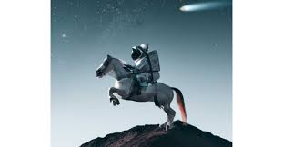
İşte DALL E 2 başlıca özelliklerinden bazıları:
-
Dakikalar içinde son derece gerçekçi görüntüler oluşturma: Uygulama, kısa bir süre içinde
oldukça gerçekçi görseller üretebilir.
-
İllüstrasyonlar oluşturma: Metin tabanlı açıklamalarla illüstrasyonlar ve çeşitli görsel
tasarımlar meydana getirebilme yeteneği bulunmaktadır.
-
Ürün tasarlama: Kullanıcılar, ürün tasarımı konusunda fikirler geliştirebilir ve görsel olarak
ifade edebilirler.
-
Kullanımı kolay arayüz: Anlaşılır bir kullanıcı arayüzüne sahip olması, herkesin uygulamayı
kolayca kullanabilmesine olanak tanır.
-
Görüntünün birden çok katmanını özelleştirme: DALL·E 2, gölgeler, vurgular gibi detayları
eklemek ve görüntüyü çeşitli katmanlarda özelleştirmek için araçlar sunar.
3-Midjourney:
Midjourney, Discord içinde çalışan bir anlık ileti uygulaması. Gerçek sanat
yarışmalarında insanlara karşı yarışıp kazanabilen bu uygulama, kullanıcıların istedikleri
konseptleri basitçe anlatmalarına dayalı olarak görseller oluşturuyor. Özellikle yağlı boya
tarzında benzersiz çalışmalar yapabilen bu yapay zeka uygulaması detaylarıyla dikkat
çekiyor. Ancak Discord ile entegrasyonu nedeniyle kullanımı için bazı adımlar gerekiyor.
Eleştirilere rağmen, yaratıcı görselleriyle ilgi çekiyor ve ücretsiz deneme seçeneği sunuyor.
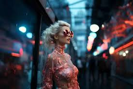
İşte Midjourney başlıca özelliklerinden bazıları:
-
1. Yapay Zeka Esinlemesi: Midjourney, yapay zeka algoritmalarını kullanarak sanat eserleri
üretir. Özgün ve farklı tarzlarda görseller yaratır.
-
2. Çeşitlilik: Farklı konseptlerde ve tarzlarda eserler üretebilir. Portrelerden manzaralara, soyut
çalışmalardan daha gerçekçi tasarımlara kadar geniş bir yelpazede eserler ortaya koyabilir.
-
3. Yaratıcılık: Yapay zeka tarafından üretilen eserler genellikle benzersizdir ve insan
duyarlılığına göre farklılık gösterebilir.
-
4. İlham Verme: Sanatseverlere ve diğer sanatçılara ilham verme potansiyeline sahiptir. Yapay
zeka tarafından üretilen eserler, insanların farklı bakış açılarıyla ilham alabileceği nitelikte
olabilir.
Midjourney gibi yapay zeka sistemleri, sanat alanında teknolojinin yaratıcılığa katkı sağladığı
ve yeni tarzlar, formlar ve estetik anlayışlarını keşfetmek için kullanılabileceği potansiyeli
göstermektedir.
4- NightCafe:
NightCafe, önde gelen yapay zeka fotoğraf oluşturma uygulamalarından biri.
Diğerlerine göre daha geniş bir algoritma ve seçenek yelpazesi sunuyor. Kullanımı kolay olan
bu uygulama, üretilen içeriklerin sahipliğini alma imkanı da sağlıyor. Taramalı ya da gerçek
hayattan çekilen fotoğraflarla eserler oluşturabilen güçlü bir görüntü tanıma özelliğine sahip.
Ayrıca farklı tarzlarda çalışmalar yapmak da mümkün, deneme sürümüyle beraber gelişmiş
seçenekler sunuyor.
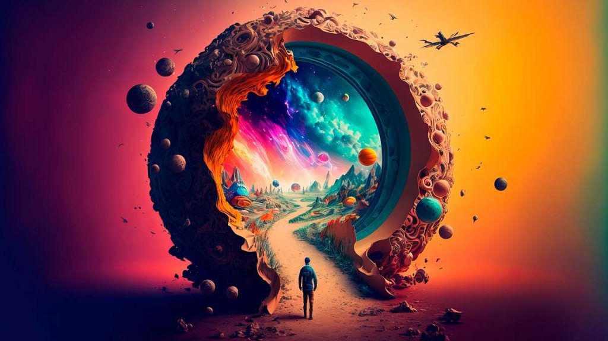
İşte NightCafe başlıca özelliklerinden bazıları:
-
1. Sanat Yapmak için En İyi 10 Yapay Zeka Programı: NightCafe, sanat oluşturmak için
tasarlanmış en iyi yapay zeka programları arasında yer alıyor.
-
2. Üretilen İçerikler Sahipliğe Sahip: Kullanıcılar, ürettikleri içeriklerin sahipliğini alma
şansına sahipler.
-
3. Daha Fazla Algoritma: Diğer benzer uygulamalara kıyasla daha geniş bir algoritma
yelpazesi sunuyor.
-
4. Gelişmiş Kullanıcı Kontrolleri: Deneyimli kullanıcılar için çeşitli kontrol seçenekleri
bulunuyor, daha fazla özelleştirme imkanı sunuyor.
-
5. Topluluğa Katılım ve Kredi Kazanma: Kullanıcılar, topluluğa katılarak kredi kazanma
şansına sahipler.
-
6. Sosyal Özellikler ve Yardımlaşma: Uygulama, çok sayıda sosyal özellik sunmanın yanı sıra
yardıma ihtiyacı olan bir topluluk etrafında bir araya gelmiş durumda.
5- Deep Dream Generator:
milyonlarca görüntüyle eğitilmiş bir yapay zeka aracıdır.
Kullanımı kolay olan bu uygulama, bir görüntü yüklemenizi sağlar ve seçtiğiniz stile göre
yeni ve gerçekçi bir görüntü oluşturur. Farklı resimleme stillerini kullanarak zaman veya
mekân bağlamında farklılık gösteren eserler üretebilirsiniz. Ayrıca, hayvanlar veya
manzaralar gibi kategorilerden seçim yaparak gerçekçi görüntüler üretebilirsiniz. Ücretsiz
sürümü kullanıcılarına sunarken gelişmiş seçeneklerle daha geniş imkanlar sağlar. Bunun
yanı sıra, Text 2 Dream adlı kendi metinden görüntü oluşturma yazılımlarını da piyasaya
sürmüşlerdir.
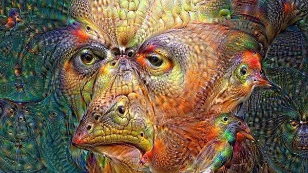
İşte Deep Dream Generator başlıca özelliklerinden bazıları:
-
İşte Deep Dream Generator başlıca özelliklerinden bazıları:
-
Milyonlarca görüntüyle eğitilmiş güçlü bir sinir ağına dayanması
-
Farklı resimleme stillerini içermesi ve görüntü kategorileri üzerinde çalışabilme özelliği
-
Üç ayrı stil seçeneği sunması ve kullanıcıların tercihlerine göre eserler oluşturabilme imkanı
-
Metinden görüntü oluşturma yeteneği ile kullanıcıların kendi metinleriyle görseller
üretebilme özelliği.
6-Artbreeder:
yapay zeka kullanarak bir görüntünün çeşitli varyasyonlarını oluşturan bir
araç olarak bilinir. Kullanıcılar, manzara, anime karakterleri, portreler ve farklı sanat
eserlerini tek bir platformda oluşturabilirler. Özellikle yüz özelliklerini değiştirme, cilt rengi,
saç ve gözleri ayarlama gibi özellikleri bulunur. Ayrıca, fotoğrafları animasyonlu figürlere
dönüştürme imkanı da sunar. Artbreeder, binlerce illüstrasyon sunar ve bu eserleri klasörlerde
yönetme olanağı verir. Oluşturulan sonuçlar JPG veya PNG formatında indirilebilir.
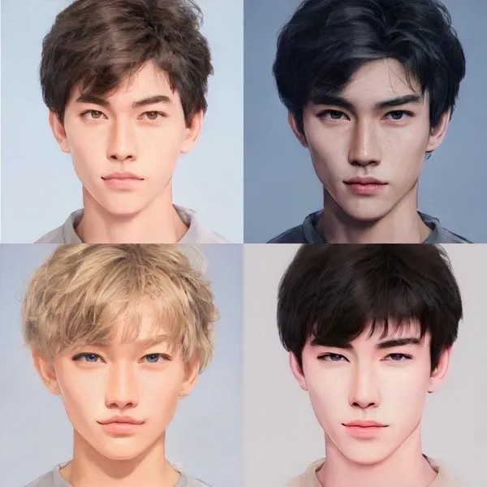
İşte Artbreeder Generator başlıca özelliklerinden bazıları:
-
Görüntü kalitesini geliştirme yeteneği
-
Tek bir görüntüden farklı varyasyonlar oluşturma imkanı
-
Manzara, anime karakterleri, portreler gibi çeşitli sanat türlerinde çalışabilme
-
Illüstrasyonları klasörlerde düzenleyebilme ve yönetme özelliği
-
Sonuçları JPG ve PNG formatlarında indirme imkanı
GAN( GENERATİVE ADVERSARİAL NETWORKS ) :
GAN'lar (Generative Adversarial Networks), yapay zeka alanında oldukça güçlü ve yaratıcı
bir teknik olarak kullanılır. Bazı GAN tabanlı uygulama ve programlar şunlardır:
1. Artbreeder: GAN'larla çalışarak bir görüntünün farklı varyasyonlarını oluşturur. Farklı sanat
türlerinde çalışabilir ve illüstrasyonları yönetebilirsiniz.
2. Deep Dream Generator: GAN tekniklerini kullanarak gerçekçi görüntüler oluşturabilirsiniz.
Farklı resimleme stilleri ve görüntü kategorileri üzerinde çalışabilirsiniz.
3. GANPaint Studio: GAN tabanlı bir uygulama olan GANPaint Studio, fotoğraflar üzerinde
değişiklik yaparak resimlerin içeriğini değiştirebilir veya kaldırabilirsiniz. Örneğin, bir
resimdeki nesneleri silebilir veya ekleyebilirsiniz.
4. DALL-E: GAN teknolojisi kullanan DALL-E, metin tabanlı girişlerle görseller oluşturabilir.
Verilen metin açıklamalarına dayanarak benzersiz görseller üretebilir.
Bu GAN tabanlı uygulamalar, yapay zeka tekniklerini kullanarak yaratıcı ve özgün görsel
içerikler oluşturmayı amaçlar. Bu uygulamalar, GAN'ların gücünü kullanarak kullanıcılara
geniş bir yaratıcı alan sağlar.
GÖRSEL SANATLARDA YAPAY ZEKA KULLANAN
SANATÇILAR
görsel sanatlarda yapay zekayı kullanarak eserler ortaya koyan birkaç tanınmış sanatçı:
Bu sanatçılar, yapay zeka teknolojilerini kullanarak sınırları zorlayan, yenilikçi ve deneysel
eserler üretiyorlar. Her biri, yapay zeka ile sanat arasındaki etkileşimi araştırarak ve
teknolojinin sanatsal yaratıcılıkta nasıl kullanılabileceğini göstererek dikkat çekici
çalışmalara imza atıyor.
Mario Klingemann:
Almanya merkezli bir sanatçı olan Klingemann, yapay zeka ve derin
öğrenme tekniklerini kullanarak sanat eserleri üretiyor. GAN'lar gibi yapay zeka
algoritmalarını kullanarak rastgele oluşturulan görselleri manipüle ediyor ve benzersiz sanat
eserleri yaratıyor. Yapay zeka ile sanat arasındaki sınırları zorlayarak dikkat çekici çalışmalara
imza atıyor.
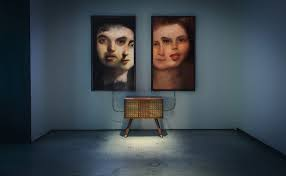
Robbie Barrat:
Amerikalı bir yapay zeka araştırmacısı ve sanatçı olan Barrat, genellikle
GAN'lar gibi derin öğrenme algoritmalarını kullanarak deneysel eserler oluşturuyor. Yapay
zekanın rastgele ürettiği görseller üzerinde çalışarak farklı tarzlarda eserler ortaya koyuyor ve
yapay zekanın sanatsal yaratıcılıkta nasıl kullanılabileceğini gösteriyor.
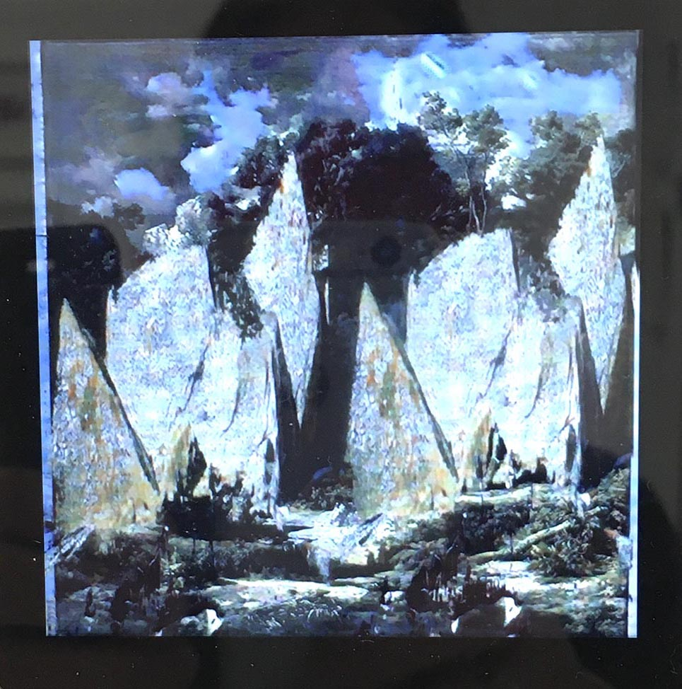
AI Art Collective:
Yapay zeka teknolojilerini sanatsal üretimde kullanan bir grup sanatçıdan
oluşuyor. GAN'lar, derin öğrenme ve benzeri teknikleri kullanarak kolektif olarak eserler
üretiyorlar. Bu kolektif, yapay zekanın sanat dünyasında nasıl bir yaratıcılık potansiyeline
sahip olduğunu keşfetmeye çalışıyor ve ortak bir sanatsal vizyon üzerinde çalışıyorlar.
Mike Tyka:
Mike Tyka, sanatçı, araştırmacı ve mühendis olarak yapay sinir ağlarının sanat
alanında kullanılmasına öncülük etmiştir. Sanat eserlerinde yapay sinir ağlarını başarılı bir
şekilde kullanarak bu teknolojinin sanatsal potansiyelini ortaya koymuştur.
Refik Anadol:
Türk asıllı bir sanatçı ve tasarımcı olan Anadol, büyük ölçekli veri setleri
üzerinde çalışarak yapay zeka algoritmalarını kullanarak dijital enstalasyonlar ve medya sanatı
eserleri üretiyor. Veri analizi ve derin öğrenme teknikleriyle interaktif ve büyüleyici görsel
deneyimler sunuyor.
Refik Anadol’un yapay zeka’dan yararlanarak oluşturduğu bazı projeler:
Refik Anadol'un "WDCH Dreams" adlı eseri, Los Angeles'taki Walt Disney Konser
Salonu'nun 100. yıl dönümünü kutlamak için hayata geçirildi. Anadol ve ekibi, LA
Philharmonic'in 45 terabaytlık dijital arşivini kullanan özel bir makine zekâsı geliştirdi.
Bu teknoloji, iki farklı sergide kullanıldı: ilki, konser salonunun dış cephesine yansıtılan
bir haftalık sanat sergisi; ikincisi ise WDCH içindeki Ira Gershwin Gallery'de sezonluk
bir sergi. Bu proje, Artists and Machine Intelligence (AMI) ve Refik Anadol Studios iş
birliğiyle gerçekleştirildi ve büyük ilgi çekti.
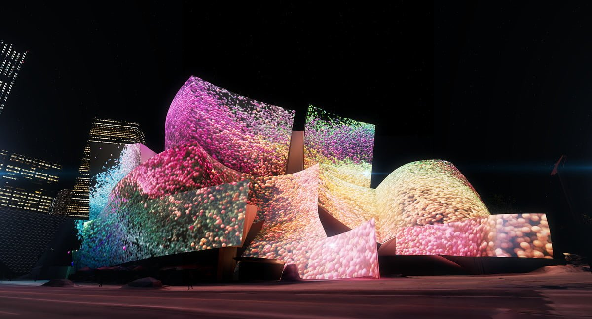
Archive dreaming:
Refik Anadol'un "Archive Dreaming" adlı eseri, ışığı kullanarak
mimari bir tuval oluştururken içeriğindeki verileri barındıran geçici ve etkileyici bir ortam
sunuyor. Anadol, SALT Araştırma koleksiyonlarındaki 1.700.000 belge arasındaki
ilişkileri ve düzenlemeleri incelemek için makine öğrenimi algoritmalarını kullandı. Bu
çok boyutlu veriler, etkileşimli bir medya enstalasyonuna dönüştürülerek izleyicilere
sürükleyici bir deneyim sunuldu.
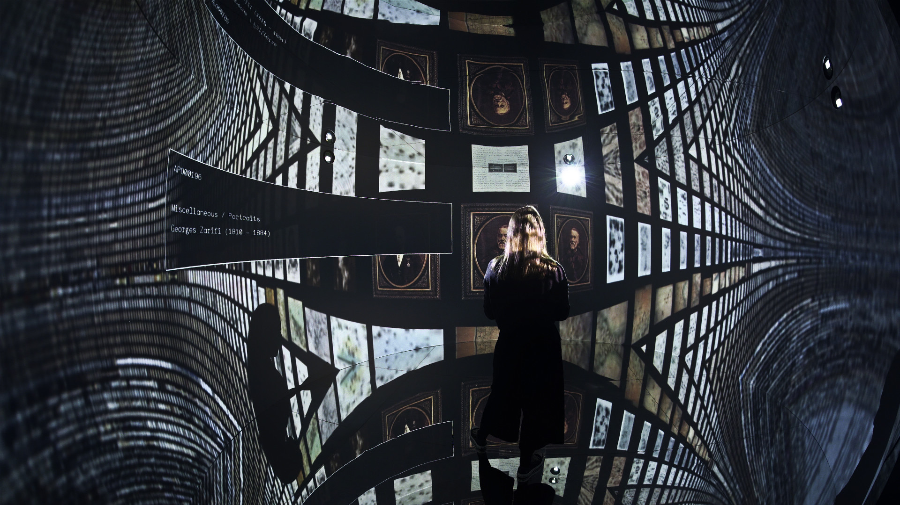
Melting Memories:
"Melting Memories" adlı proje, ileri teknoloji ve çağdaş sanatın
birleşiminden doğan, hatırlamanın değerini keşfetmeyi hedefleyen bir dizi dijital sanat
eserinden oluşuyor. Bu proje, veri resimleri, artırılmış veri heykelleri ve ışık
projeksiyonlarından oluşuyor. Ziyaretçilerin bilişsel kontrolünün nöral mekanizmalarında
toplanan EEG verilerini kullanarak, estetik yorum ve deneyimlerde yeni gelişmelerin önünü
açıyor. İzleyicilere hatırlama ve belleğin estetik yönlerine odaklanarak yeni bir bakış açısı
sunuyor.
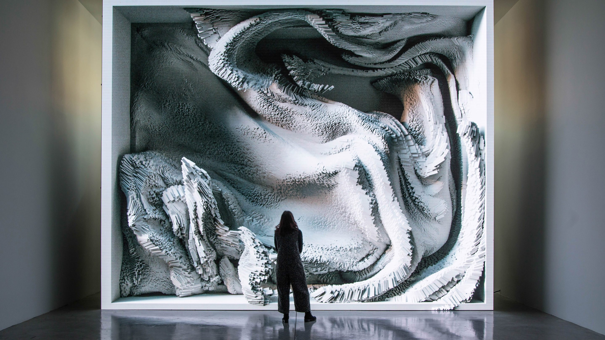
Makine Hatıraları:
“Uzay" adlı sergi, bilimsel araştırmalar ve makine zekasıyla evrenin
derinliklerini görsel olarak keşfetmeyi amaçlıyor. Bu sergi, bilgi kümelerini görsel
spekülasyonlar ve estetik olanaklarla buluşturarak alternatif bir veri evreni oluşturuyor. Refik
Anadol'un sergisi, görünmez uzay verilerini kamusal sanat aracılığıyla duygusal bir ifadeyle
birleştirerek şiirsel metaforlar oluşturuyor. Bu, uzayın katmanlarına doğru ilerlemenin ve
evrenin sonsuzluğunu hayal etmenin önemine vurgu yaparak, izleyicilere derinlemesine bir
evrenin kaçınılmaz keşfi için bir çağrı niteliği taşıyor.
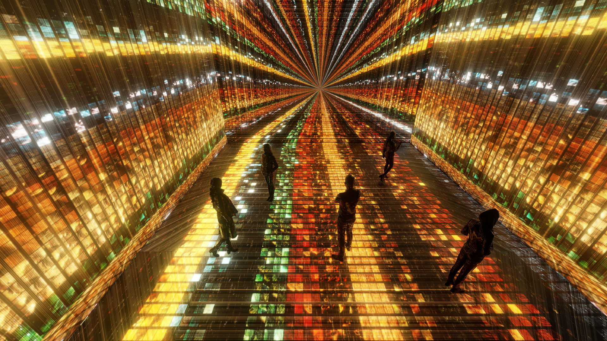
Tega Brain:
Tega Brain, sanat ile çevre mühendisliği arasında köprü kuran ve çalışmalarında
bu disiplinlerin kesişimini keşfeden bir Avustralyalı sanatçıdır. Eserleri genellikle sanatın,
ekolojinin ve mühendisliğin etkileşimini ve etkileşimlerini araştırır. Bu çalışmalar, genellikle
teknoloji, doğa ve insan etkileşimi gibi konuları ele alarak, bu farklı alanları bir araya getirerek
özgün ve düşündürücü eserler ortaya koyar. Tega Brain'in çalışmaları genellikle teknolojinin
doğayla uyumunu veya çatışmasını, insan faaliyetlerinin çevresel etkilerini ve bunların sanat
yoluyla nasıl anlatılabileceğini keşfeder.
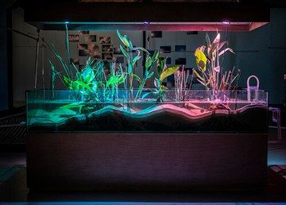
Deep Swamp:
"Deep Swamp" adlı proje, sulak alan yaşam formlarını ve yapay zeka yazılım
ajanlarını bir araya getiren yarı sular altında yer alan bir ortamdır. Proje, cam tanklar, sulak
alan bitki türleri, çakıl, kum, akrilik borular, gölge topları, elektronik cihazlar, buğulayıcılar,
özel yazılım ve üç kanallı ses sistemlerini kullanır. Bu yapıt, doğal ve yapay unsurların bir
araya geldiği etkileyici bir ortamı simgeler ve izleyicilere sulak alan ekosistemlerinin ve yapay
zeka teknolojisinin etkileşimini deneyimleme fırsatı sunar.